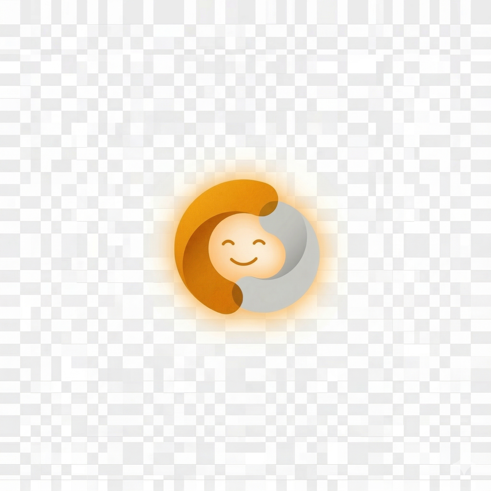

frontend/src/app/globals.css with the same
prefers-reduced-motion gate active here.
ℹ Note: animations in this repo always play regardless of your OS's prefers-reduced-motion setting (so you can review them).
In production code these are gated — users with reduced-motion enabled see static layouts. See B6 / F2 in 02-decisions.md.
Kai animations
Animations applied to the Kai mark on home hero, chat header, and onboarding completion.
kai-bob
Home hero · Kai sitting mark · 4s ease-in-out infinite

@keyframes kai-bob {
0%, 100% { transform: translateY(0) rotate(-0.5deg); }
50% { transform: translateY(-4px) rotate(0.5deg); }
}
/* 4s ease-in-out infinite */
kai-breathe
Onboarding wizard · login · alternative to kai-bob · 4s
@keyframes kai-breathe {
0%, 100% { transform: scale(1); }
50% { transform: scale(1.025); }
}
/* 4s ease-in-out infinite */
Tile + card entries
One-shot entry animations on cards, tiles, and toast appearances. Tile press uses pandesal-squish.
pandesal-squish
Action tile press / button click · 0.4s ease-out one-shot
Scan
@keyframes pandesal-squish {
0% { transform: scale(1); }
40% { transform: scale(0.97, 1.02); }
100% { transform: scale(1); }
}
/* 0.4s ease-out — runs on click */
:active scale.
slide-up
Card entry · page mount · 0.4s cubic-bezier one-shot
@keyframes slide-up {
from { opacity: 0; transform: translateY(10px); }
to { opacity: 1; transform: translateY(0); }
}
/* 0.4s cubic-bezier(.2,.7,.2,1) both */
fade-in
Lightweight content reveal · 0.35s ease-out
@keyframes fade-in {
from { opacity: 0; transform: translateY(4px); }
to { opacity: 1; transform: translateY(0); }
}
/* 0.35s ease-out both */
pop-in
Toast · success indicator · 0.25s
@keyframes pop-in {
0% { transform: scale(0.96) translateY(8px); opacity: 0; }
100% { transform: scale(1) translateY(0); opacity: 1; }
}
/* 0.25s cubic-bezier(.2,.9,.2,1.1) both */
gentle-float
Paper-note primitive · 6s ease-in-out infinite
@keyframes gentle-float {
0%, 100% { transform: translateY(0); }
50% { transform: translateY(-6px); }
}
/* 6s ease-in-out infinite */
wobble
Paper-note hover · 1.8s ease-in-out infinite
@keyframes wobble {
0%, 100% { transform: rotate(0); }
25% { transform: rotate(-1deg); }
75% { transform: rotate(1deg); }
}
/* 1.8s ease-in-out infinite */
Chat indicators
typing-bounce
Kai chat bubble · 3-dot typing indicator · 1.4s
@keyframes typing-bounce {
0%, 60%, 100% { transform: translateY(0); opacity: 0.4; }
30% { transform: translateY(-4px); opacity: 1; }
}
/* 1.4s infinite · stagger 0.16s × index */
Ambient backgrounds
Continuous low-energy animations on background motifs. All gated on prefers-reduced-motion.
petal-drift
Home FloatingPetals · 14s linear infinite (per petal)
@keyframes petal-drift {
0% { transform: translateY(-20px) translateX(0) rotate(0deg); opacity: 0; }
10% { opacity: 0.55; }
50% { transform: translateY(50vh) translateX(20px) rotate(180deg); opacity: 0.45; }
100% { transform: translateY(110vh) translateX(-10px) rotate(360deg); opacity: 0; }
}
/* 14–22s linear infinite · randomized per petal */
transform + opacity only. Off-thread compositor.
Note: 6 petals on home is the proposed default; 12 only on celebration burst.
leaf-sway
SwayingLeaf decoration · 5s ease-in-out infinite
@keyframes leaf-sway {
0%, 100% { transform: rotate(-3deg); }
50% { transform: rotate(3deg); }
}
/* 5s ease-in-out infinite · transform-origin: bottom center */
sun-slow
Sunburst behind Kai mark · 30s linear infinite
@keyframes sun-slow {
0% { transform: rotate(0deg); }
100% { transform: rotate(360deg); }
}
/* 30s linear infinite · transform-origin: center */
steam-rise
IconCheckin coffee cup · 2s ease-out infinite
@keyframes steam-rise {
0% { opacity: 0; transform: translateY(2px); }
30% { opacity: 0.7; }
100% { opacity: 0; transform: translateY(-8px); }
}
/* 2s ease-out infinite · only on the steam paths */
Celebrations
One-shot triggered animations for milestones, success, and onboarding completion.
check-pop
Checkmark on confirmation · 0.45s ease-out one-shot
@keyframes check-pop {
0% { transform: scale(0.6); }
60% { transform: scale(1.15); }
100% { transform: scale(1); }
}
/* 0.45s ease-out one-shot */
bounce-in
Onboarding completion celebration · 0.6s
@keyframes bounce-in {
0% { transform: scale(0.3); opacity: 0; }
60% { transform: scale(1.1); opacity: 1; }
100% { transform: scale(1); }
}
/* 0.6s cubic-bezier */
flame-flicker
Streak counter on home check-in note · 1.6s ease-in-out infinite
@keyframes flame-flicker {
0%, 100% { transform: scale(1) rotate(-2deg); }
50% { transform: scale(1.08) rotate(3deg); }
}
/* 1.6s ease-in-out infinite */